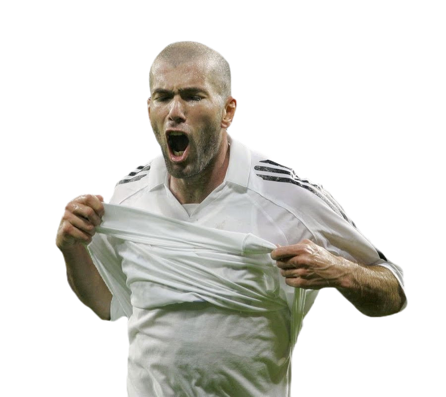
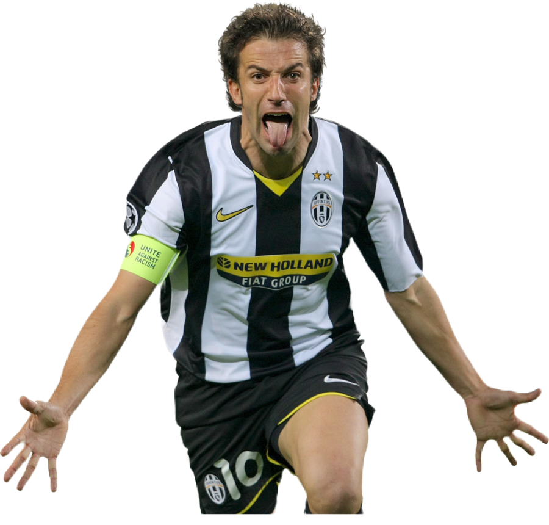
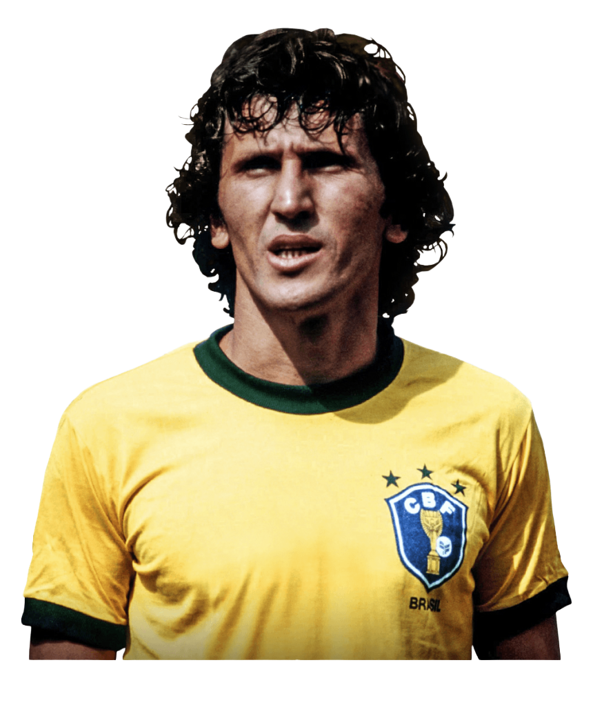
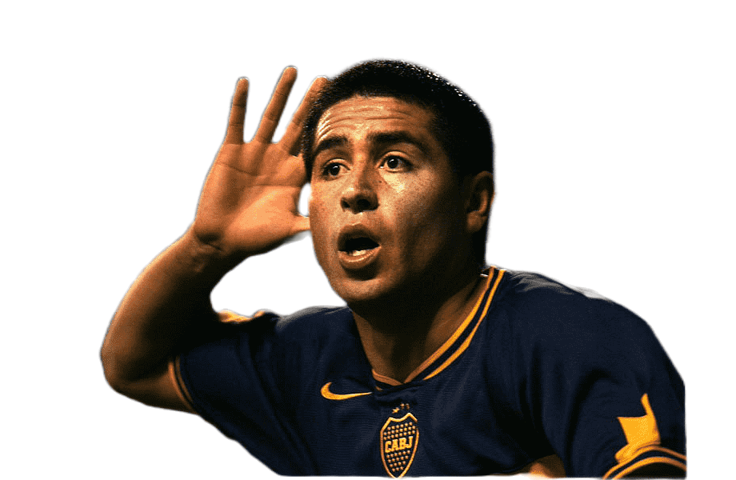
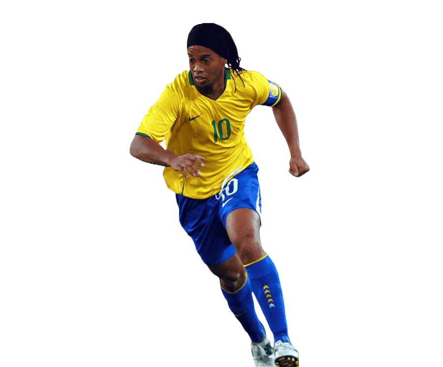
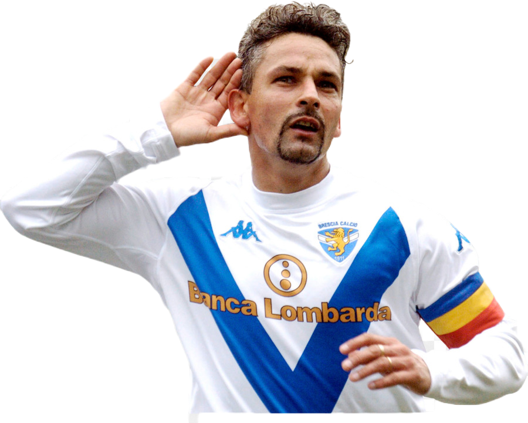

¿Cómo era un número 10 antes?
Antiguamente los jugadores que usaban la camiseta número 10 jugaban un fútbol mas cerebral y no tan físico, siendo siempre el eje de sus equipos y el conector entre los volantes y los delanteros. Algunos de estos terminaron jugando en otras posiciones cuando se adaptaron a el nuevo fútbol y otros como Riquelme mantuvieron su postura a pesar de ser criticados.
Zinedine Zidane
Zidane fue un jugador francés nacido en la ciudad de Marsella en el año 1972. Jugador de
una clase única en su posición fue ganador de una copa del mundo y elegido el mejor en otra de las que
disputó. Reconocido por su fina elegancia.

Alessandro Del Piero
Del Piero fue un jugador italiano nacido en Apulia, fue un número 10 distinto sobre
todo por su capacidad goleadora y su versatilidad en el ataque donde se consagró campeón del mundo jugando
de delantero acompañado de un número 9.

Zico
Arthur Antunes Coimbra nació en el año 1953 en Rio de Janeiro, por su calidad y su
nacionalidad fue denominado como el "Pelé blanco", apodo que respaldaba en la cancha siendo uno de los
primeros números 10 clásicos.

Juan Román Riquelme
Conocido como "El último 10" o simplemente como Román, el argentino fue uno de los últimos
10
clásicos que mantuvo su estilo hasta el día de su retiro, siendo siempre el jugador que le da la pausa y el
cerebro a su equipo. Multicampeón con Boca en su época dorada.

Ronaldinho Gaúcho
Dinho fue otro de los que demostró una versatilidad en la cancha. Es admirado por
muchísima gente por su magia y su alegría dentro de la cancha. Siempre con un juego vistoso y con una
sonrisa, Ronaldinho obtuvo muchos títulos como el mundial o el BdO.

Roberto Baggio
Nacido en el 1967 en Vicenza, Italia, Baggio fue uno de los grandes exponentes del fútbol
de los 80/90, con una clase única y mucha facilidad para apilar rivales y convertir. "Il Divino" hizo toda
su carrera en la serie A donde es una de las mayores leyendas.
